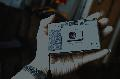

thambar2015-03-22 10:424.83 分
操作性 5.00功能性 5.00美观性 5.00趣味性 5.00耐用性 4.50性价比 4.50
死硬分子2011-12-22 12:374.75 分
操作性 5.00功能性 5.00美观性 5.00趣味性 4.50耐用性 4.50性价比 4.50
cybertron2011-10-28 05:114.83 分
操作性 5.00功能性 5.00美观性 5.00趣味性 5.00耐用性 5.00性价比 4.00
Sayes2011-04-30 19:084.75 分
操作性 5.00功能性 5.00美观性 5.00趣味性 5.00耐用性 5.00性价比 3.50
伊里奇。列宁2010-05-01 16:494.83 分
操作性 5.00功能性 5.00美观性 5.00趣味性 5.00耐用性 4.50性价比 4.50

joythink2010-01-30 18:204.42 分
操作性 5.00功能性 5.00美观性 5.00趣味性 4.00耐用性 4.00性价比 3.50
WoWiWi2009-09-28 17:523.83 分
操作性 4.00功能性 4.00美观性 5.00趣味性 5.00耐用性 3.00性价比 2.00
小肉2009-08-19 16:265 分
操作性 5.00功能性 5.00美观性 5.00趣味性 5.00耐用性 5.00性价比 5.00
sc2012008-11-01 23:053.83 分
操作性 4.00功能性 4.50美观性 4.50趣味性 4.00耐用性 4.00性价比 2.00
夏天2006-06-02 21:424.83 分
操作性 5.00功能性 5.00美观性 5.00趣味性 5.00耐用性 4.50性价比 4.50